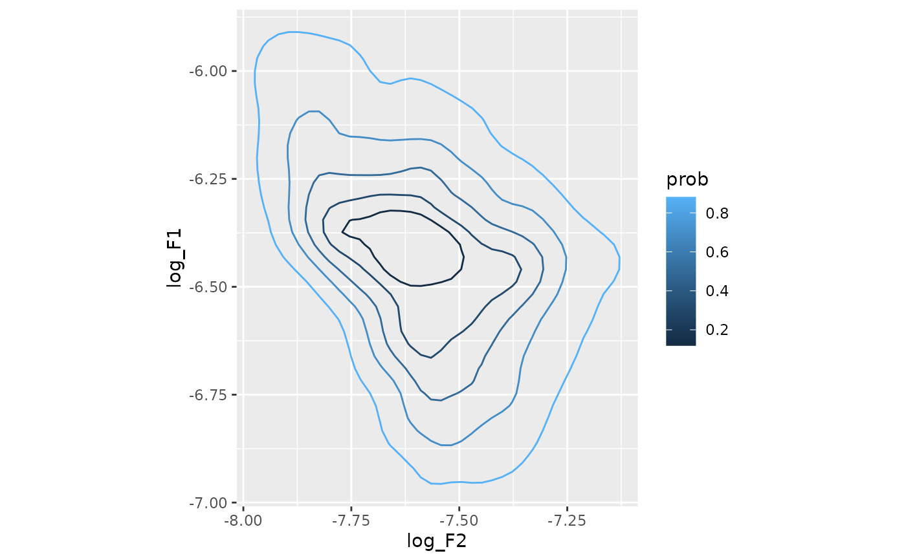
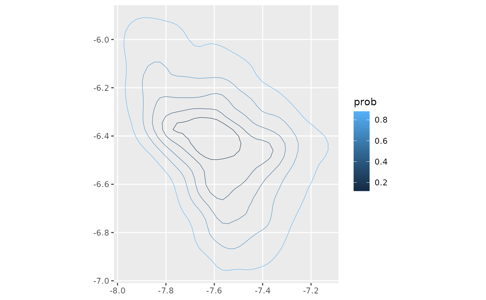

Given numeric vectors x and y, density_polygons() will return
a data frame, or list of a data frames, of the polygon defining 2d kernel
densities.
Usage
density_polygons(
x,
y,
probs = 0.5,
as_sf = FALSE,
as_list = FALSE,
range_mult = 0.25,
rangex = NULL,
rangey = NULL,
...
)Arguments
- x, y
Numeric data dimensions
- probs
Probabilities to compute density polygons for
- as_sf
Should the returned values be sf::sf? Defaults to
FALSE.- as_list
Should the returned value be a list? Defaults to
FALSEto work withdplyr::reframe()- range_mult
A multiplier to the range of
xandyacross which the probability density will be estimated.- rangex, rangey
Custom ranges across
xandyranges across which the probability density will be estimated.- ...
Additional arguments to be passed to
ggdensity::get_hdr()
Value
A list of data frames, if as_list=TRUE, or just a data frame,
if as_list=FALSE.
Data frame output
If as_sf=FALSE, the data frame has the following columns:
- level_id
An integer id for each probability level
- id
An integer id for each sub-polygon within a probabilty level
- prob
The probability level (originally passed to
probs)- x, y
The values along the original
xandydimensions defining the density polygon. These will be renamed to the original input variable names.- order
The original plotting order of the polygon points, for convenience.
sf output
If as_sf=TRUE, the data frame has the following columns:
- level_id
An integer id for each probability level
- prob
The probability level (originally passed to
probs)- geometry
A column of
sf::st_polygon()s.
This output will need to be passed to sf::st_sf() to utilize many of the
features of sf.
Details
When using density_polygons() together with dplyr::summarise(), as_list
should be TRUE.
If both rangex and rangey are defined, range_mult will be disregarded.
If only one or the other of rangex and rangey are defined, range_mult
will be used to produce the range of the undefined one.
Examples
library(densityarea)
library(dplyr)
library(purrr)
library(sf)
ggplot2_inst <- require(ggplot2)
tidyr_inst <- require(tidyr)
#> Loading required package: tidyr
set.seed(10)
x <- c(rnorm(100))
y <- c(rnorm(100))
# ordinary data frame output
poly_df <- density_polygons(x,
y,
probs = ppoints(5))
head(poly_df)
#> # A tibble: 6 × 6
#> level_id id prob x y order
#> <int> <int> <dbl> <dbl> <dbl> <int>
#> 1 5 1 0.881 0.452 1.84 1
#> 2 5 1 0.881 0.421 1.84 2
#> 3 5 1 0.881 0.385 1.83 3
#> 4 5 1 0.881 0.318 1.82 4
#> 5 5 1 0.881 0.251 1.81 5
#> 6 5 1 0.881 0.185 1.80 6
# It's necessary to specify a grouping factor that combines `level_id` and `id`
# for cases of multimodal density distributions
if(ggplot2_inst){
ggplot(poly_df, aes(x, y)) +
geom_path(aes(group = paste0(level_id, id),
color = prob))
}
# sf output
poly_sf <- density_polygons(x,
y,
probs = ppoints(5),
as_sf = TRUE)
head(poly_sf)
#> Simple feature collection with 5 features and 2 fields
#> Geometry type: POLYGON
#> Dimension: XY
#> Bounding box: xmin: -2.121515 ymin: -2.335062 xmax: 1.717362 ymax: 1.853571
#> CRS: NA
#> # A tibble: 5 × 3
#> # Groups: level_id [5]
#> level_id prob geometry
#> <int> <dbl> <POLYGON>
#> 1 1 0.119 ((-0.01576091 0.8491369, -0.08251555 0.8658244, -0.1492702 0.8…
#> 2 2 0.310 ((0.184503 1.038165, 0.1177484 1.046844, 0.05099373 1.056666, …
#> 3 3 0.5 ((-0.3495341 1.254354, -0.4162888 1.249887, -0.4830434 1.24276…
#> 4 4 0.690 ((1.006821 1.436427, 0.9855587 1.447619, 0.9188041 1.472848, 0…
#> 5 5 0.881 ((0.4515216 1.839313, 0.4214659 1.835448, 0.384767 1.831195, 0…
# `geom_sf()` is from the `{sf}` package.
if(ggplot2_inst){
poly_sf |>
arrange(desc(prob)) |>
ggplot() +
geom_sf(aes(fill = prob))
}
# Tidyverse usage
data(s01)
# Data transformation
s01 <- s01 |>
mutate(log_F1 = -log(F1),
log_F2 = -log(F2))
## Basic usage with `dplyr::reframe()`
### Data frame output
s01 |>
group_by(name) |>
reframe(density_polygons(log_F2,
log_F1,
probs = ppoints(5))) ->
speaker_poly_df
if(ggplot2_inst){
speaker_poly_df |>
ggplot(aes(log_F2, log_F1)) +
geom_path(aes(group = paste0(level_id, id),
color = prob)) +
coord_fixed()
}

### sf output
s01 |>
group_by(name) |>
reframe(density_polygons(log_F2,
log_F1,
probs = ppoints(5),
as_sf = TRUE)) |>
st_sf() ->
speaker_poly_sf
if(ggplot2_inst){
speaker_poly_sf |>
ggplot() +
geom_sf(aes(color = prob),
fill = NA)
}

## basic usage with dplyr::summarise()
### data frame output
if(tidyr_inst){
s01 |>
group_by(name) |>
summarise(poly = density_polygons(log_F2,
log_F1,
probs = ppoints(5),
as_list = TRUE)) |>
unnest(poly) ->
speaker_poly_df
}
### sf output
if(tidyr_inst){
s01 |>
group_by(name) |>
summarise(poly = density_polygons(
log_F2,
log_F1,
probs = ppoints(5),
as_list = TRUE,
as_sf = TRUE
)) |>
unnest(poly) |>
st_sf() ->
speaker_poly_sf
}